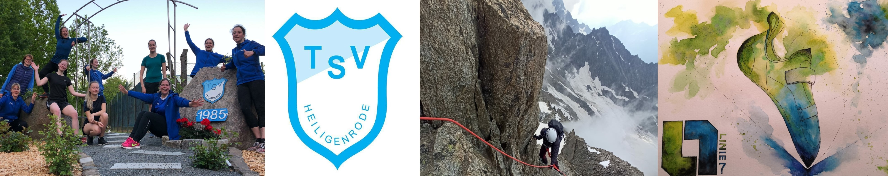

Hi, I am Mareike Boettcher, 32 years old
I am currently studying "Business Psychology" remotely at the IU
International University, Germany. I plan on finishing in 2022 with
a Master's degree. I did my Bachelor's degree in "Industrial
Engineering" at the University Bremen.
I like sports, hiking and mountains, traveling, painting and being
creative, and also playing board games. I just generally like to try
new things and have just recently added coding to my list of stuff I
love doing.
I grew up in the North of Germany - close to Bremen - where I am
still living with most of my family nearby. I love to travel, so I
ended up doing two bigger travels in my life: a world trip for one
year in 2015 and an 8-month Asia trip in 2019.
Here are some of the things I like to do:
Sports:

-
Bouldering:
Climbing without a rope and a partner. Solving puzzles with your mind and your body's unique abilities while working out. What's better than this? -
Korbball:
Team sports lives with the people you play with - they become family. Korbball is a German women's sport and it could be explained as a mix between Handball and Basketball. -
Swimming:
I love water and swimming is a great way to get a full-body workout without sweating. Maybe the only sport that actually cools you down. -
Yoga:
Perfect for body and soul. From relaxing and stretching to hard workouts just a wonderful addition to any kind of sport (especially climbing). -
Cycling:
A wonderful exercise while also exploring or getting somewhere. Definitely the better alternative to cars! -
Hiking:
Maybe my favorite thing to do. Especially if it involves mountains! Nature is best explored on foot.
Painting / drawing:
-
Watercolor:
The easiest access to the painting world with only a few items to get going and so many ways to live creativety. -
Acryl:
Perfect for bigger sized canvases and bold colors, dries fast - wonderfully divers. -
Oil:
Maybe my favorite, but also the hardest way to paint as it takes very long to dry. Blending colors in a very realistic way is probably easiest with this method. -
Digital:
My newest addition to painting. Needs the fewest amount of materials, is not messy at all and can be done everywhere. What a great way to get creative!
Hiking / travel blog:
-
Blog project:
Last year during the Covid lockdown 2 friends and I have started a travel blog for the region of Northern Germany. We wanted to show people a way to see new things and enjoy the nature around them close to where they live as traveling was not possible...
See more on www.windundwetterwandern.de. -
Personal blog:
As I love traveling I started blogging for friends and family when I was away on one of my adventures. The last bigger trip was an Asia tour from summer 2019 until the start of the pandemic.
See more on finding-maboe.blogspot.com/.
Gardening:
-
Gardening:
In 2018 I bought a small garden near my home town which I am using together with my sister to grow veggies and fruits and hang out during the summer when the city feels too hot. Hammock life yiha. -
Crafting:
I like working with my hands to create things, so I often try new stuff like Macramé or just building things for the garden (new toilet, pergola, etc.)